AI Foundations
for Managers

Tauhid Zaman
AI in the Core
- First time Yale SOM has put AI in the core
- Using AI is now an important managerial skill.
- This is a hands-on course. You will use AI to build tools that improve real business functions.
- You guide the building, while AI handles the engineering details.
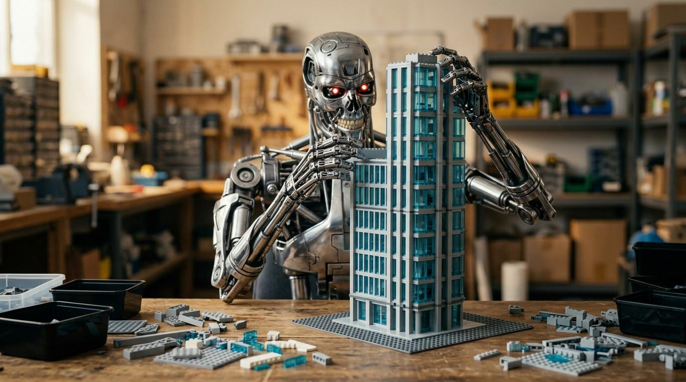
What this class covers
- AI vibe coding
- AI agents
- Images and video
- Apps
- MCP servers
- Tokenomics
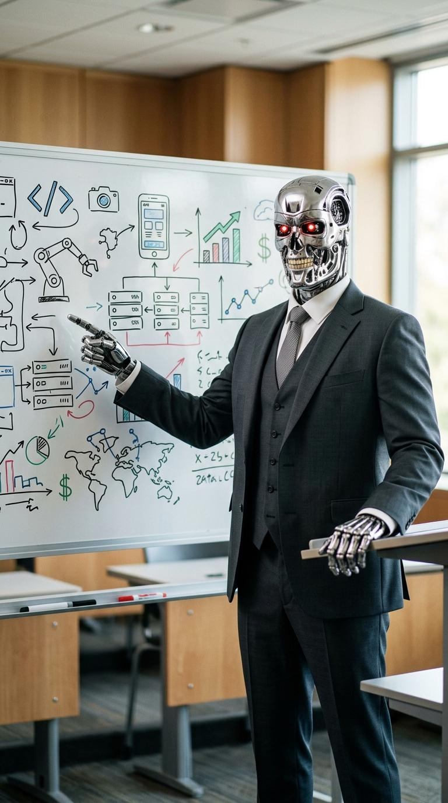
AI vibe coding
- Describe what you want in words; AI writes the code
- You need to understand the structure and flow, i.e. the "vibe"
- Key skill - writing the prompt
AI agents
- Put the model in a loop: plan → call a tool → read the result → repeat
- Tools: web search, read/write files, run Python, call APIs
- Example: find new sales prospects, design a new product line, clean up my inbox, trade stocks until I'm rich, prove the Riemann hypothesis, create a drug to cure cancer, etc.
Images and video
- Vision = AI can see and undertand images
- Products, people, websites, videos
- Build vision based tools for your agents
Apps
- Wrap your agent in software people can actually use
- Customer support chatbots, sales outreach tools, operations dashboard
- Web apps or mobile apps
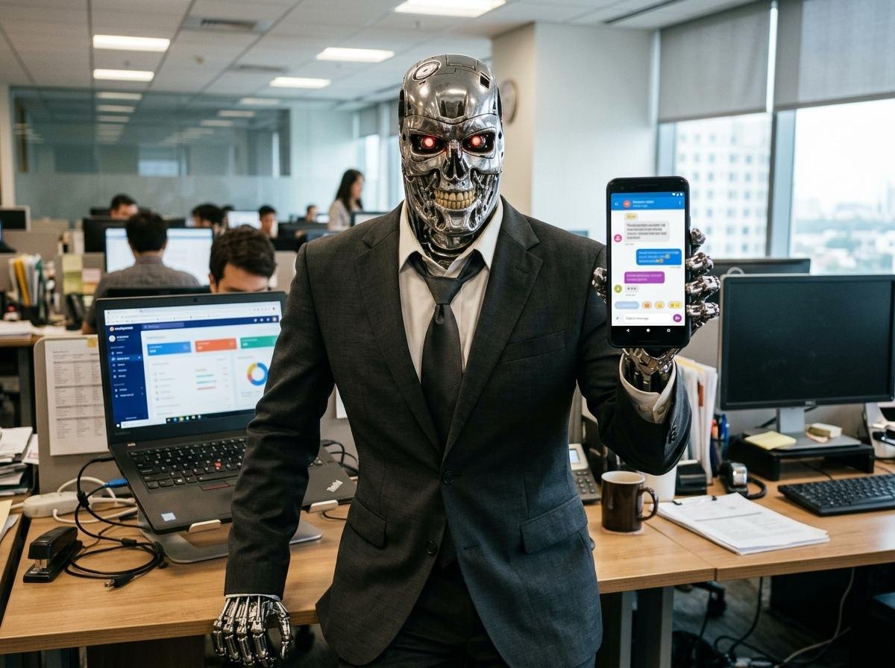
MCP servers
- A standard plug-in layer so agents can call different applications via chat
- Gmail, Stripe, Slack, Spotify, Canvas — or build your own
- MCP servers are products for AI agents — not for humans.
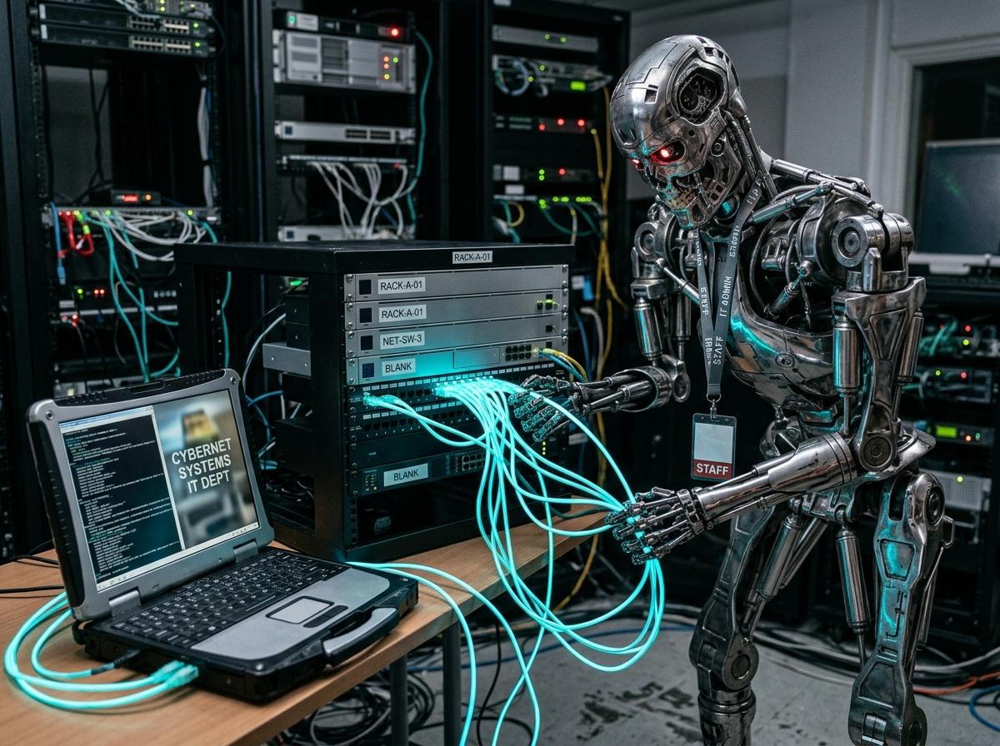
Tokenomics
- Tokens (words) → dollars: what each model call actually costs and why
- Design cost-effective agents — cheap model vs. smart model
- Guardrails and shorter prompts save money as well as risk
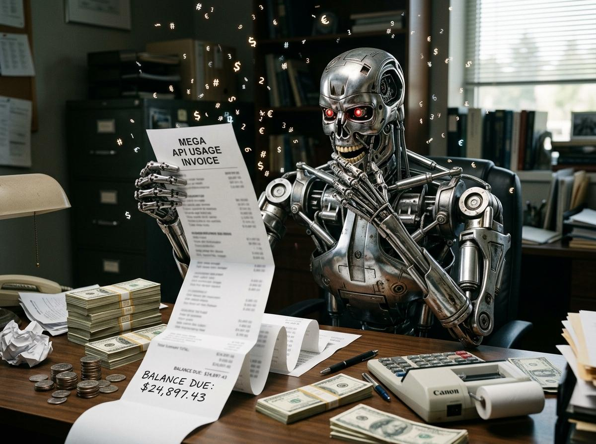
Class Website
- Everything you need for the class is on the website
https://zlisto.github.io/mgt_409_fa26/
- Canvas will be used for announcements and submitting assignments
Vibe Coder
- Codex in VS Code
- Default model: gpt-5.6-luna
- Three GPT-5.6 models — pick the pig that matches the job:
| Name | Intelligence | Cost per 1M tokens (in/out) |
|---|---|---|
| Luna | Weakest | $0.20 / $1.20 |
| Terra | Medium | $2 / $12 |
| Sol | Smartest | $5 / $30 |
| Yale provides you with $40 of tokens | ||
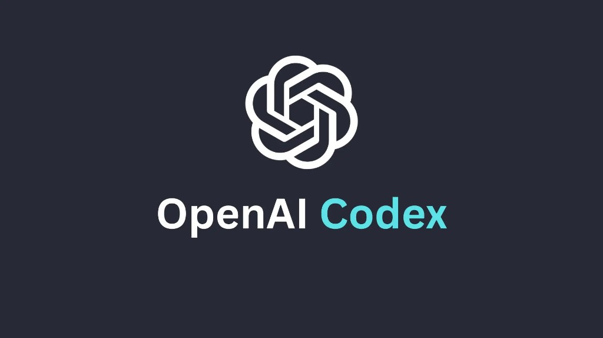
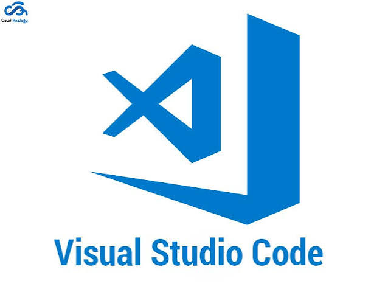
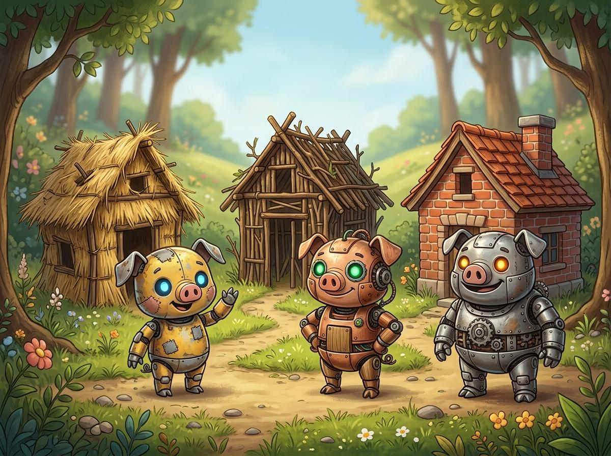
Cursor
- Cursor is another vibe coder you can use (at your own expense)
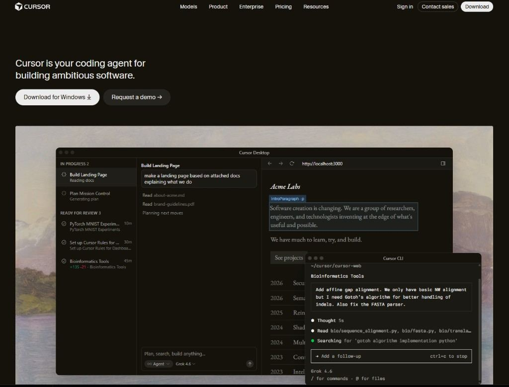
Cursor Founder
- Michael Truell — CEO of Cursor
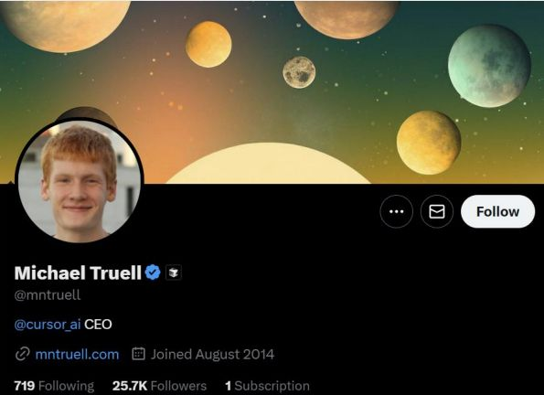
Before He Founded Cursor
Cursor Growth
Transformers
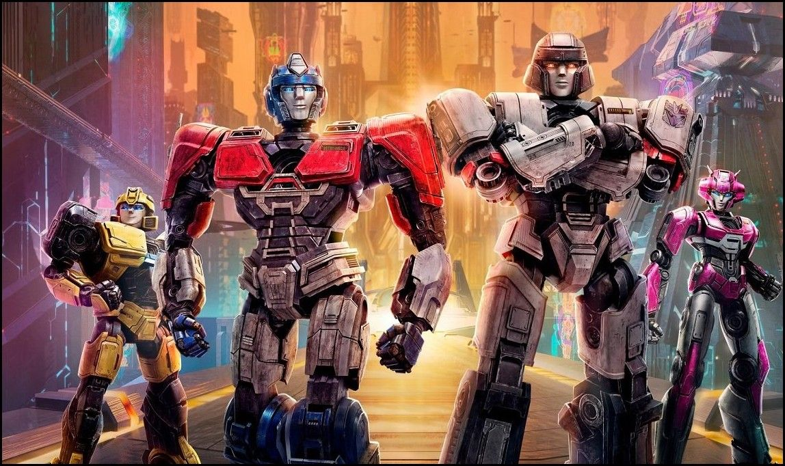
Transformers
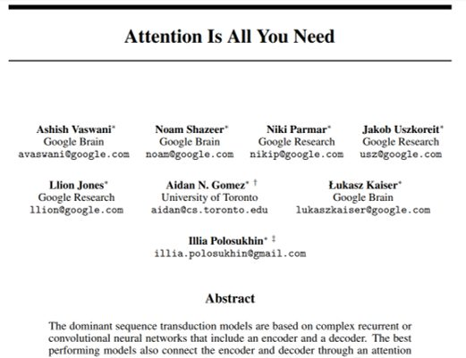
Transformer Architecture
- Each word (token) is represented as an embedding vector
- The transformer has many multi-headed attention layers
- Each layer changes the
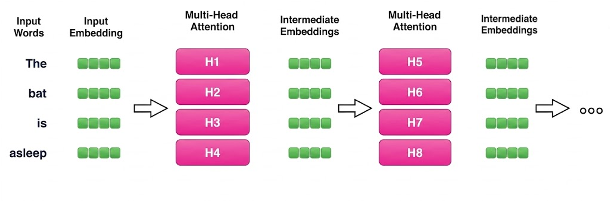
Attention Weights
- An attention head computes a weight between each pair of words
- The weights tell you how much a word pays “attention” to another word
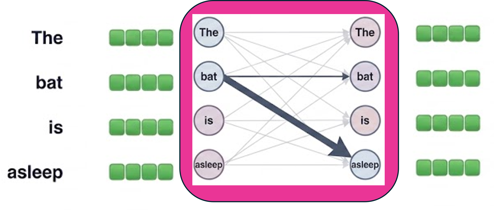
Context Dependent Embeddings
Consider these sentences that use the word bat
- A bat flew out of the cave
- The bat pooped on the ground
- A bat bit me in the neck
- I’m afraid of a bat because it is like a rat with wings
- A bat flew out of the baseball player’s hand
- I hit a home run with the metal bat
- No one swung a bat harder than Babe Ruth.
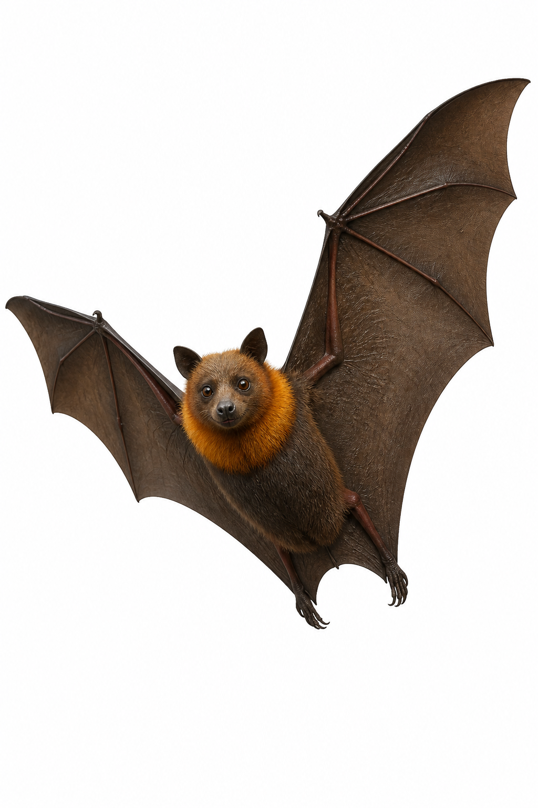
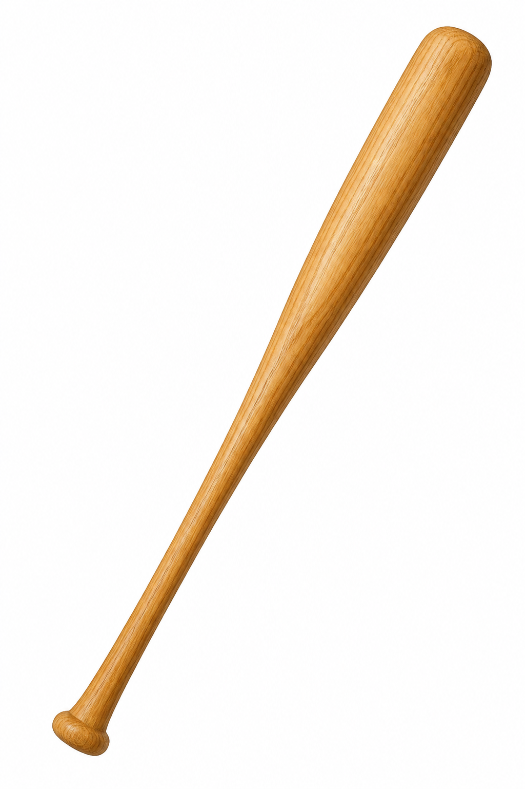
Context Dependent Embeddings
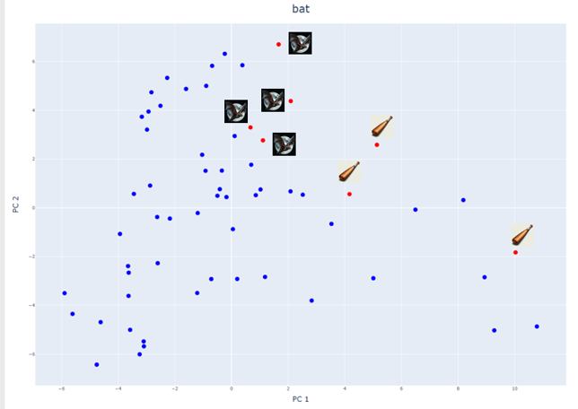
Transformers Talking
- A generative transformer turns the word embedding vector into a probability distribution over all words in the vocabulary
- Text is generated by sampling from this distribution
- These types of transformers are also called large language models (LLMs)
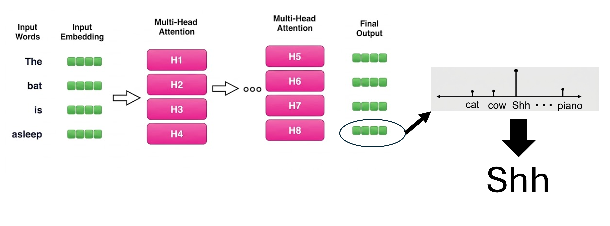
What Can Transformers Do?
- Generate text
- Measure sentiment
- Translate languages
- Summarize the reading you didn’t do
- Answer questions
- Write (and debug) Python
- Be your friend :)
- Anything!!!!
How Fast Did AI Get Smarter?
Artificial Analysis Intelligence Index vs release date — hover a point for the model name. Frontier lines for OpenAI, Anthropic, Google (Gemini), xAI (Grok), and DeepSeek (open weights).
Source: Artificial Analysis Intelligence Index (composite of hard evals: coding, science, agents, etc.). GPT-1 / GPT-2 / GPT-3 near Index ≈ 1 are illustrative (predate the Index). Other points from AA model pages & changelog (v4.1.1 where noted); index weights shift over time — use for relative progress, not exact cross-era comparisons.
Frontier Models Intelligence
- Terminal-Bench v2.1 tests AI agents on hard, real terminal work — 89 tasks spanning coding, sysadmin, data, training, and security
- Each task is graded by automated tests in a live shell; today’s top models still miss plenty of them
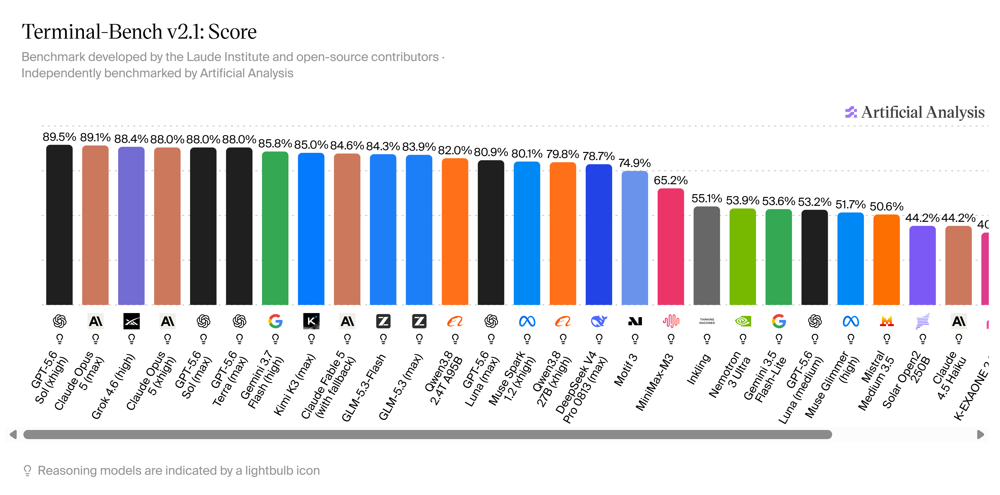
Frontier Models Cost
- Same benchmark — now ranked by average $ per task
- Cheaper is not always dumber; watch where the frontier sits
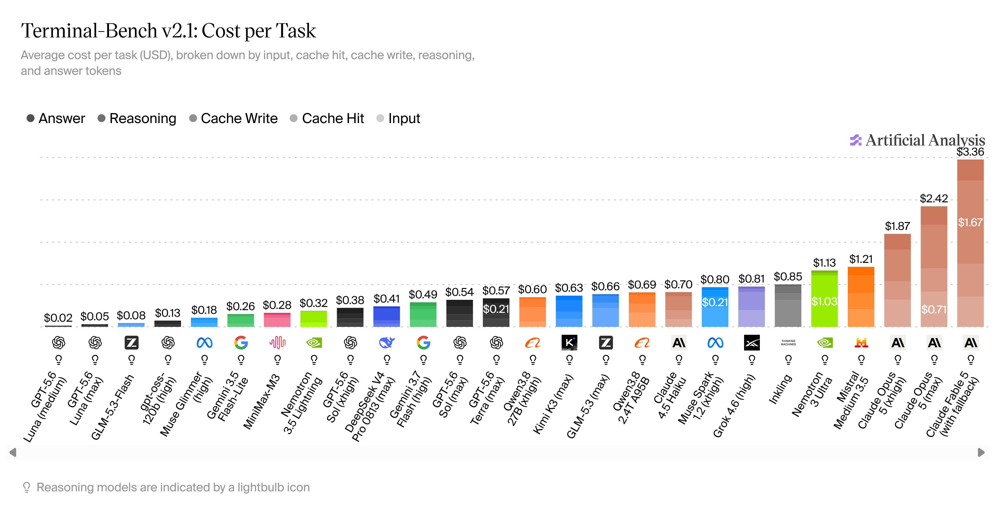
Frontier of the Frontier
Terminal-Bench v2.1 — cost per task vs score. Hover a dot for the model. The dashed line is the cheap-and-smart frontier (nothing cheaper scores higher).
Numbers read from Artificial Analysis Terminal-Bench v2.1 charts (27 Aug 2026). Source: artificialanalysis.ai/evaluations/terminalbench-v2-1
When Humans Meet Machine Intelligence
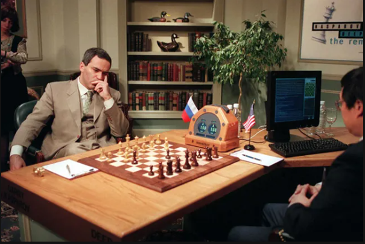
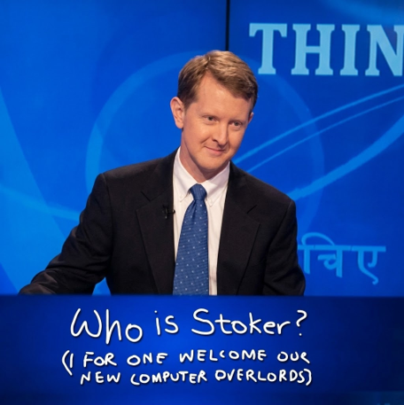
- Kasparov lost — and was furious: accused IBM of cheating, stormed off the cultural high ground
- Jennings lost too — but accepted defeat with grace and humor (“I welcome our new computer overlords”)
- Same shock, opposite response — the winners are the ones who partner with the machine
Terence Tao on AI and Mathematics
- Terence Tao — Fields medalist, often called the greatest living mathematician
- He believes AI can advance mathematics — not replace human insight
- Math must rethink the field and embrace AI, or lose the narrative
- New Scientist interview
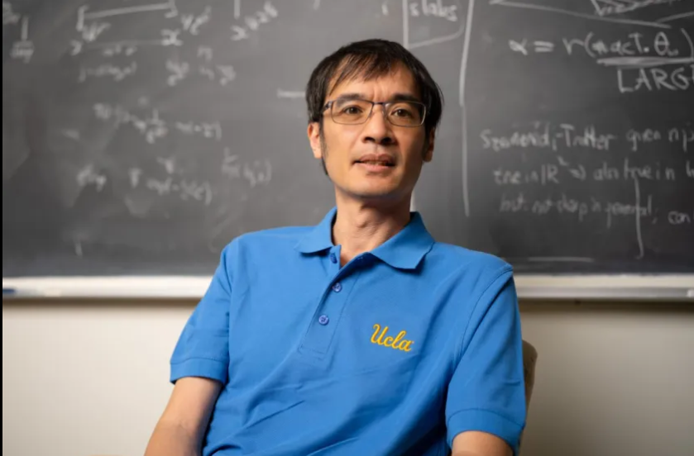
Recent AI Achievements in Math
- OpenAI (Astra) — 10 long-open problems
- Non-sofic group
- Connes rigidity conjecture
- Erdős Problem #183
- Ehrhart volume conjecture
- Sphere-packing bound + 5 more
- Anthropic (Claude)
- Riemann zeta zeros — >⅔ on the critical line
- S⁶ complex structure (Hopf problem, open since 1948; still under review)
1 OpenAI write-up · 2 Anthropic — Riemann zeta · 3 S⁶ claim — coverage
AI-Maxxing Frame
- Once you embrace AI and decide to AI-maxx, you're in a new frame — you stop bolting AI onto the old workflow
- Not “use AI to fill in a spreadsheet” → no spreadsheets; AI updates your records database directly
- Not “use AI to skim resumes in HR” → AI interviews every candidate in depth and maps real strengths
- Not “use AI to draft customer-support replies” → AI owns the resolution loop and only escalates true edge cases
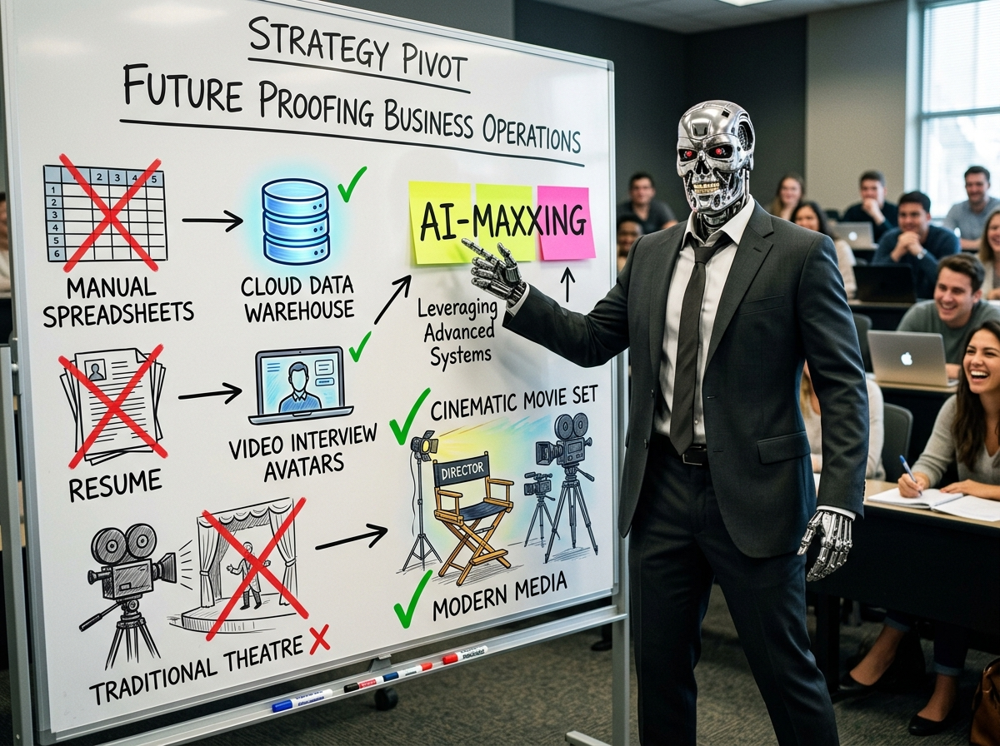
New Tech, New Paradigm
- Every transformative technology starts by bolting onto the old world — until someone sees what the tool is really for
- Early cameras just filmed stage plays — then someone invented cinema
- AI today is that kind of leap: design the next paradigm, not a faster version of yesterday
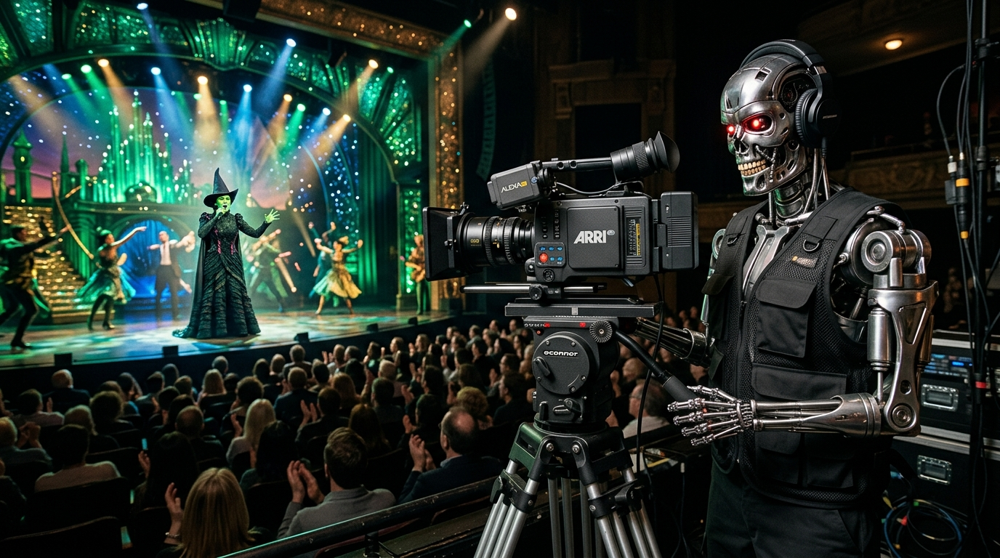
Course logistics
- 6 homeworks
- Vibe code solutions to business problems
- Submit code in zip files onto Canvas (later as online GitHub repos)
- Anti-cheating measures in homeworks - don't blindly give the problem to the AI. Read it, understand it, and interact with the AI to complete it
- Final project
- Business AI Co-Pilot that integrates the class modules
- Details will be provided soon on website
- Attendance
- Attendance is mandatory for class
- Attendance is taken at the beginning of class via QR code - don't be late
- If you miss attendance, email the professor and explain your reasons
- Tell the professor to put up the code now
Next Class
- We will be vibe coding
- Setup VS Code, Codex, and Portkey
- Bring ideas for things you want to build
- We might try them in class for fun
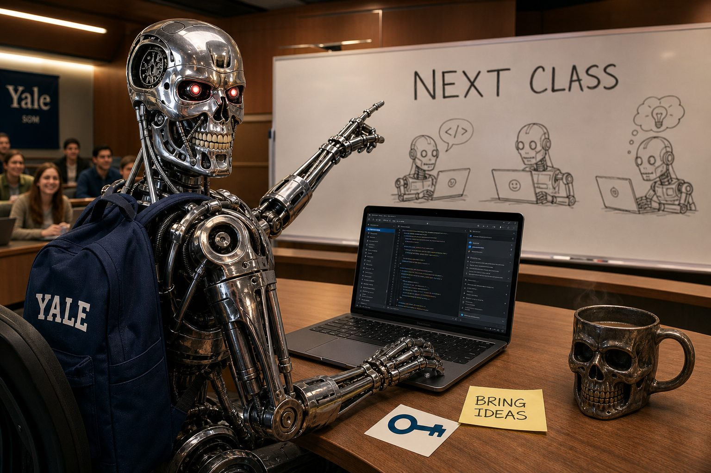